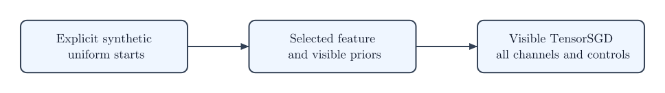
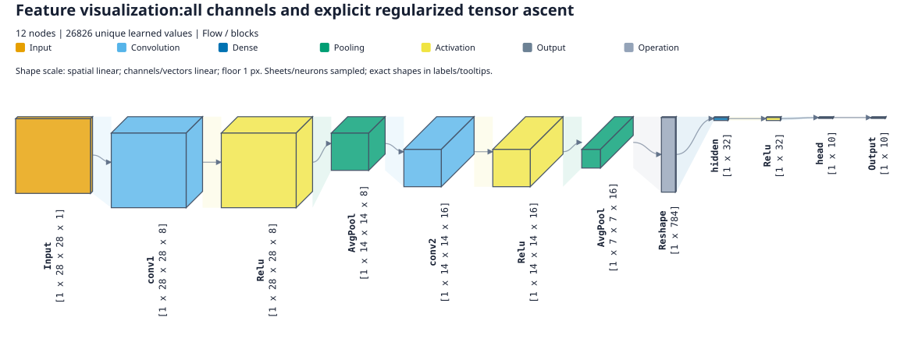
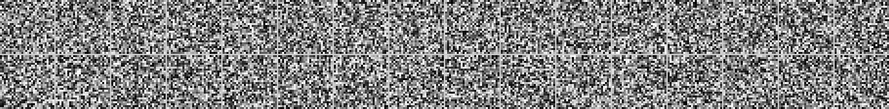
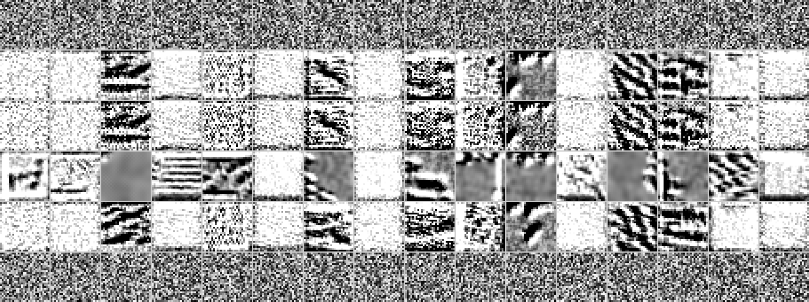
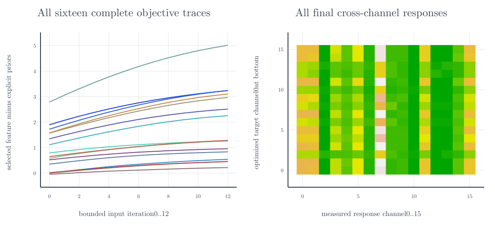

Feature visualization:all channels and explicit regularized tensor ascent
Abstract
An internal convolutional channel can prefer patterns that are hard to identify from its weights. Optimize explicit synthetic inputs for every frozen MNISTconv2channel,show every TensorSGD step and image prior,and retain all channels and control outcomes.
Source example: examples/cpp/source/nn/1_convolutional_neural_networks/1.11_interpretability/feature_visualization.cpp.
The method
For selected post-ReLUchannelc,maximize its spatial mean while explicitly penalizing centered pixel energy and squared neighbor differences:
Plain tensorSGD on the negative RMS-normalized ordinary derivative proposes bounded image changes;actual complete-objective backtracking accepts nondecreases. Model parameters remain frozen. Uniformnoise initialization is declared synthetic;this is channel-preference synthesis rather than attribution to a real observation.
The concept diagram below is drawn by dm::graphics::Diagram. Its editable C++
source is the complete block below; regeneration uses the same datamunge toolchain
as the numerical examples. Exports consume the saved local SVG.
#include <dm/dm.hpp>
int main() {
std::filesystem::create_directories("build");
dm::graphics::Diagram diagram;
diagram.node("n0", {0.0, 0}, "Explicit synthetic\n uniform starts");
diagram.node("n1", {5.2, 0}, "Selected feature\n and visible priors");
diagram.node("n2", {10.4, 0}, "Visible TensorSGD\n all channels and controls");
diagram.edge("n0", "n1").edge("n1", "n2");
diagram.save_svg("build/feature_visualization_concept.svg");
}
The optimized input is explicit synthetic noise
Restore the exact frozen MNIST classifier and actual initial arrays from [vanilla saliency](vanilla_saliency.mepml),where all96tensor Adam fitting updates and held-out errors are visible. There is no new classifier fitting. Here the inputs are deliberately SYNTHETICuniform noise,not real MNIST images: 16independent28pxstarts,one per selected conv2channel0..15. Seeds1423and1429 are fixed before inspecting results. Every channel is retained without selection by its response or visual appearance.
The objective for one selected channel is its mean spatial post-ReLUresponse, minus.01times mean(x-.5)^2and.2times squared-TV. Squared-TV is the sum of mean squared vertical and horizontal first differences,not absolute TV. The three objective terms remain visible. Maximizing one channel does not suppress every other channel and need not produce a digit or semantic prototype.
Executed tensor architecture
The diagram shows the forward MNIST CNN that the attribution or feature-optimization method inspects; the attribution algorithm is explained separately.
This figure executes the inference configuration shown in the code, using a zero-valued shape probe without fitting or loading a checkpoint. Named stage boundaries group whole subgraphs where available; other nodes retain functional-layer detail. Exact batch-inclusive shapes and reachable parameter totals come from the trace. Shared linear scales map spatial dimensions and channel counts to blocks; the one-pixel visibility floor is disclosed in the legend. Labels use compact monospace text, rotate counterclockwise and sit beside their own glyphs. Arrows flow left to right; wide diagrams scroll at native size on the website.
#include <dm/dm.hpp>
int main() {
namespace n = dm::nn;
namespace m = n::models;
n::set_num_threads(2);
std::filesystem::create_directories("build");
n::ParameterStore p(1103);
n::Module architecture_model(
[&](const n::Tensor& image) { return m::SaliencyCnn(p, image).logits; },
"Feature visualization:all channels and explicit regularized tensor ascent");
n::ModelPlotOptions options;
options.style = n::ModelPlotStyle::Flow;
options.detail = n::ModelPlotDetail::Blocks;
options.labels = {.type = n::ModelPlotLabel::NameAndShape, .size = 12, .wrap = 24};
options.spacing = {.layer = 24, .lane = 12, .label = 8, .margin = 20};
options.sizing.spatial_size = 96;
options.sizing.channel_size = 42;
options.sizing.minimum_extent = 1;
options.opacity = .8;
const auto diagram = architecture_model.plot(n::zeros({1, 28, 28, 1}), options);
diagram.save_svg("build/feature_visualization_architecture.svg");
std::print(
"{} displayed nodes; {} reachable learned values.\n",
diagram.nodes().size(),
diagram.parameter_count());
}12 displayed nodes; 26826 reachable learned values.

Exact image-prior derivatives and actual noise starts
A declared feature map[image,2*image]and selected channel1give a2*xspatial mean. Native independent checks verify the full objective,all784image gradients and all1512squared-TVedges including boundaries. The batchmean derivative has an explicit1/Bfactor. Uniform inputs use raw mt19937draws and Doubletensor (raw+.5)/2^32scaling beforeFloat32rounding,with exact seeded replay.
#include <dm/dm.hpp>
int main() {
namespace n = dm::nn;
namespace m = n::models;
const auto first = m::FeatureNoise(16, 1423), second = m::FeatureNoise(16, 1429);
const auto x = m::FeatureNoise(1, 1433).requires_grad_();
const auto objective =
m::VisualizeFeature(x, n::concat({x, x * 2.}, 3), n::ones({1}, n::DType::Int32), 2, .3f, .7f);
const auto gradient = n::grad(objective.mean, {x})[0];
std::print(
"Declared selectedresponse {},L2 {},squaredTV {},completeobjective "
"{},every784gradientfinite {}.\n",
objective.feature,
objective.l2,
objective.tv,
objective.mean,
n::all(n::is_finite(gradient)).item<bool>());
n::save_image_grid(
n::concat({first, second}, 0), "build/feature_visualization_noise.png", 16, 0, 1, 2, .8, 3);
}Declared selectedresponse float32[1] [0.997244] (grad_fn=Sum),L2 float32[1] [0.080823] (grad_fn=Div),squaredTV float32[1] [0.334425] (grad_fn=Add),completeobjective float32[] 0.7389 (grad_fn=Div),every784gradientfinite true.

Every selected-channel TensorSGD loop and bounded proposal
For each of all16channels,warm one Doubleimage leaf before plain tensorSGD. Show all twelve ordinary objective gradients,RMSnormalization,negative-gradient ascent step,projection to[0,1],Float32candidate evaluation and monotonic12trial backtracking. Rejected proposals reset the image leaf;the frozen classifier arrays are excluded from the image optimizer. Each channel is optimized as one independent image,matching the source per-image RMS convention.
Five variants retain every channel:regularized main,unregularized,actual initial weights,second seed,and zero rate. Zero-rate controls keep every starting pixel unchanged. All960channel/iteration records,all initial/final16channel response vectors and every gradient/proposal are saved;the table reports every final selected response and objective gain rather than hiding weak or confusing cases.
#include <dm/dm.hpp>
int main() {
namespace n = dm::nn;
namespace m = n::models;
n::set_num_threads(2);
n::ParameterStore p(1103);
{
n::NoGradGuard guard;
m::SaliencyCnn(p, n::zeros({1, 28, 28, 1}));
}
auto predict = [&](const n::Tensor& images) {
n::NoGradGuard guard;
std::vector<n::Tensor> parts;
for (std::int64_t start = 0; start < images.size(0); start += 32)
parts.push_back(
m::SaliencyCnn(
p,
n::slice_axis(images, 0, start, std::min<std::int64_t>(start + 32, images.size(0))))
.logits);
return n::concat(parts, 0);
};
for (const auto& [key, value] : n::load_npz("build/vanilla_saliency_best.npz"))
p.set(key, value.clone());
const auto before = p.flatten();
n::ParameterStore random(1103);
{
n::NoGradGuard guard;
m::SaliencyCnn(random, n::zeros({1, 28, 28, 1}));
}
for (const auto& [key, value] : n::load_npz("build/vanilla_saliency_initial.npz"))
random.set(key, value.clone());
const auto random_before = random.flatten();
const auto noise = m::FeatureNoise(16, 1423), second = m::FeatureNoise(16, 1429);
n::NamedTensors arrays{{"noise", noise}, {"noise_second", second}};
std::vector<n::Tensor> gallery{noise};
std::print(
"| variant | selected channel | initial objective | final objective | final selected "
"feature | final L2 | final squaredTV |\n|---|---:|---:|---:|---:|---:|---:|\n");
for (const std::string name : {"main", "unregularized", "initial", "second_seed", "zero"}) {
const auto starts = name == "second_seed" ? second : noise;
auto& store = name == "initial" ? random : p;
const float l2 = name == "unregularized" ? 0.f : .01f, tv = name == "unregularized" ? 0.f : .2f;
const double base_rate = name == "zero" ? 0. : .05;
std::vector<n::Tensor> final_images;
for (int channel = 0; channel < 16; ++channel) {
auto current = n::slice_axis(starts, 0, channel, channel + 1);
const auto selected = n::full({1}, channel, n::DType::Int32);
n::ParameterStore input(0, n::DType::Float64);
input.get("image", current.shape(), n::init::zeros());
input.set("image", current.to(n::DType::Float64));
n::OptimizerConfig config;
config.kind = n::OptimizerKind::Sgd;
n::Optimizer sgd(input, base_rate, config);
std::vector<n::Tensor> images, gradients, terms;
double first = 0;
for (int step = 0; step <= 12; ++step) {
auto x = current.detach().clone().requires_grad_();
const auto features = m::SaliencyConvFeatures(store, x).conv2;
const auto value = m::VisualizeFeature(x, features, selected, 16, l2, tv);
const auto term =
n::stack(
{value.mean, value.feature.reshape({}), value.l2.reshape({}), value.tv.reshape({})},
0)
.to(n::DType::Float64);
images.push_back(current);
terms.push_back(term);
if (step == 0) {
first = value.mean.item();
arrays.push_back(
{name + "_c" + std::to_string(channel) + "_initial_responses",
n::mean(features, {1, 2}).detach()});
}
if (step == 12) {
arrays.push_back(
{name + "_c" + std::to_string(channel) + "_final_responses",
n::mean(features, {1, 2}).detach()});
std::print(
"| {} | {} | {:.9g} | {:.9g} | {:.9g} | {:.9g} | {:.9g} |\n",
name,
channel,
first,
value.mean.item(),
value.feature.item(),
value.l2.item(),
value.tv.item());
break;
}
const auto gradient = n::grad(value.mean, {x})[0].detach();
gradients.push_back(gradient);
const auto wide = gradient.to(n::DType::Float64), rms = n::sqrt(n::mean(n::square(wide)));
auto accepted = current;
double rate = 0, after = value.mean.item();
int backtracks = 0;
if (base_rate > 0 && rms.item() > 0) {
rate = base_rate;
bool found = false;
for (int trial = 0; trial < 12; ++trial) {
input.set("image", current.to(n::DType::Float64));
sgd.set_learning_rate(rate);
sgd.step({-wide / (rms + 1e-12)});
const auto candidate = n::clip(input.at("image"), 0., 1.).to(n::DType::Float32);
n::Tensor score;
{
n::NoGradGuard guard;
const auto f = m::SaliencyConvFeatures(store, candidate).conv2;
score = m::VisualizeFeature(candidate, f, selected, 16, l2, tv).mean;
}
if (score.item() >= value.mean.item()) {
accepted = candidate;
after = score.item();
backtracks = trial;
found = true;
break;
}
rate *= .5;
}
if (!found) {
rate = 0;
backtracks = 12;
}
}
if (after < value.mean.item())
return 1;
const auto key = name + "_c" + std::to_string(channel) + "_s" + std::to_string(step);
arrays.push_back({key + "_rms", rms});
arrays.push_back({key + "_rate", n::full({}, rate, n::DType::Float64)});
arrays.push_back({key + "_backtracks", n::full({}, backtracks, n::DType::Int32)});
current = accepted;
}
const auto prefix = name + "_c" + std::to_string(channel);
arrays.push_back({prefix + "_images", n::concat(images, 0)});
arrays.push_back({prefix + "_gradients", n::concat(gradients, 0)});
arrays.push_back({prefix + "_terms", n::stack(terms, 0)});
final_images.push_back(current);
}
const auto final = n::concat(final_images, 0);
arrays.push_back({name + "_final", final});
if (name == "zero" && n::max(n::abs(final - noise)).item() != 0)
return 1;
gallery.push_back(final);
}
if (before != p.flatten() || random_before != random.flatten())
return 1;
std::print(
"All16selected/control classifier arrays unchanged;all960channel iterations "
"retained;zero-rate pixels exact.\n");
n::save_npz("build/feature_visualization_outputs.npz", arrays);
n::save_image_grid(
n::concat(gallery, 0), "build/feature_visualization_images.png", 16, 0, 1, 2, .8, 3);
}| variant | selected channel | initial objective | final objective | final selected feature | final L2 | final squaredTV |
|---|---|---|---|---|---|---|
| main | 0 | 1.89902949 | 3.23793197 | 3.2596519 | 0.182807669 | 0.0994589329 |
| main | 1 | 1.72406006 | 3.24092841 | 3.25410128 | 0.189793408 | 0.0563743971 |
| main | 2 | 0.00949582458 | 0.541164815 | 0.586663008 | 0.149691418 | 0.220006332 |
| main | 3 | 1.11359584 | 2.25357914 | 2.26797819 | 0.182558119 | 0.0628678426 |
| main | 4 | 0.790746629 | 1.25946295 | 1.33330429 | 0.163486362 | 0.361032367 |
| main | 5 | 1.34632111 | 2.51214767 | 2.53174353 | 0.175278679 | 0.0892149657 |
| main | 6 | 0.351295441 | 0.835432589 | 0.889896691 | 0.160369456 | 0.264301956 |
| main | 7 | 2.7873404 | 5.01394987 | 5.03004026 | 0.18725203 | 0.0710884035 |
| main | 8 | 0.579187214 | 1.27225006 | 1.35908902 | 0.175640047 | 0.425412536 |
| main | 9 | 0.520691514 | 0.956223011 | 0.995187581 | 0.152099714 | 0.187217891 |
| main | 10 | -0.0457509384 | 0.21781975 | 0.236235574 | 0.0817114115 | 0.0879935026 |
| main | 11 | 1.57129025 | 2.96899557 | 2.97949243 | 0.195805863 | 0.0426935293 |
| main | 12 | -0.00722526759 | 0.458792478 | 0.504368126 | 0.154271275 | 0.220164716 |
| main | 13 | 0.015560478 | 0.454083622 | 0.494751871 | 0.141320556 | 0.196275264 |
| main | 14 | 0.64738363 | 1.28522682 | 1.3003819 | 0.181556746 | 0.0666977987 |
| main | 15 | 1.57933486 | 3.1032536 | 3.1202538 | 0.177632123 | 0.0761190355 |
| unregularized | 0 | 1.96737313 | 3.16285324 | 3.16285324 | 0.175860301 | 0.185155988 |
| unregularized | 1 | 1.79026639 | 3.18260837 | 3.18260837 | 0.180214688 | 0.0971602947 |
| unregularized | 2 | 0.0778949484 | 0.546351433 | 0.546351433 | 0.16278699 | 0.391462684 |
| unregularized | 3 | 1.18566382 | 2.21086717 | 2.21086717 | 0.174170256 | 0.12003088 |
| unregularized | 4 | 0.85622865 | 1.30986774 | 1.30986774 | 0.175738826 | 0.581223369 |
| unregularized | 5 | 1.41667056 | 2.4674449 | 2.4674449 | 0.170022905 | 0.169291288 |
| unregularized | 6 | 0.419179708 | 0.863618374 | 0.863618374 | 0.17663303 | 0.440537661 |
| unregularized | 7 | 2.85297203 | 4.9501543 | 4.9501543 | 0.181576803 | 0.102891803 |
| unregularized | 8 | 0.651131094 | 1.30485666 | 1.30485666 | 0.183092833 | 0.579321027 |
| unregularized | 9 | 0.587298512 | 0.971971691 | 0.971971691 | 0.171484813 | 0.438353777 |
| unregularized | 10 | 0.0187749732 | 0.22119008 | 0.22119008 | 0.123164855 | 0.315280318 |
| unregularized | 11 | 1.64141142 | 2.90873957 | 2.90873957 | 0.185194761 | 0.0810870007 |
| unregularized | 12 | 0.0626534969 | 0.468969882 | 0.468969882 | 0.166800439 | 0.383681715 |
| unregularized | 13 | 0.0816391036 | 0.461458236 | 0.461458236 | 0.157831714 | 0.366359591 |
| unregularized | 14 | 0.714569271 | 1.24455595 | 1.24455595 | 0.174207196 | 0.186046004 |
| unregularized | 15 | 1.64923298 | 3.05282092 | 3.05282092 | 0.171888396 | 0.122635134 |
| initial | 0 | 0.216454387 | 0.534486771 | 0.552245796 | 0.153314605 | 0.0811293721 |
| initial | 1 | 0.346501797 | 0.713323832 | 0.741727531 | 0.153568923 | 0.134340167 |
| initial | 2 | -0.0677490532 | 0.00169278192 | 0.00250600907 | 0.00587282702 | 0.00377249462 |
| initial | 3 | 0.111273922 | 0.5000723 | 0.536423206 | 0.1338211 | 0.175063461 |
| initial | 4 | -0.0320642218 | 0.158003002 | 0.182467848 | 0.12140426 | 0.11625398 |
| initial | 5 | 0.659621775 | 1.46255016 | 1.47193623 | 0.193664923 | 0.0372469276 |
| initial | 6 | -0.0602549091 | 0.0568688586 | 0.0679192767 | 0.0461655185 | 0.0529438108 |
| initial | 7 | 0.955783486 | 1.93220997 | 1.94158494 | 0.197172984 | 0.0370161124 |
| initial | 8 | -0.0290174857 | 0.211845696 | 0.229756564 | 0.110755898 | 0.0840165243 |
| initial | 9 | -0.0439189449 | 0.069283627 | 0.0787839592 | 0.0611366965 | 0.0444448143 |
| initial | 10 | -0.0609966516 | 0.0401959568 | 0.048160363 | 0.0385370515 | 0.0378951691 |
| initial | 11 | 0.141099393 | 0.414340198 | 0.431122124 | 0.14949663 | 0.0764347613 |
| initial | 12 | -0.0686875805 | 0.018720217 | 0.0233481787 | 0.0262244884 | 0.0218285881 |
| initial | 13 | -0.0558993667 | 0.0639689788 | 0.0751346797 | 0.0529507473 | 0.0531809703 |
| initial | 14 | -0.0122284777 | 0.182988048 | 0.216924787 | 0.129124478 | 0.163227439 |
| initial | 15 | 0.298456907 | 0.87632668 | 0.885035753 | 0.166937247 | 0.0351983942 |
| second_seed | 0 | 1.88706076 | 3.22479606 | 3.24636865 | 0.180946529 | 0.0988158584 |
| second_seed | 1 | 1.7675972 | 3.2395699 | 3.25325394 | 0.189948231 | 0.0589227825 |
| second_seed | 2 | 0.0156446546 | 0.521328688 | 0.572737575 | 0.154212102 | 0.249333963 |
| second_seed | 3 | 1.14194083 | 2.26440763 | 2.27708912 | 0.184006736 | 0.0542076528 |
| second_seed | 4 | 0.782111287 | 1.23142684 | 1.30066669 | 0.159501851 | 0.338224113 |
| second_seed | 5 | 1.33677316 | 2.50504851 | 2.52490163 | 0.175270334 | 0.0905015469 |
| second_seed | 6 | 0.353371114 | 0.891387939 | 0.937885702 | 0.166741669 | 0.224151701 |
| second_seed | 7 | 2.75333881 | 4.99715424 | 5.01414251 | 0.187276527 | 0.0755787343 |
| second_seed | 8 | 0.559694767 | 1.34138036 | 1.420892 | 0.178322867 | 0.388642192 |
| second_seed | 9 | 0.52669251 | 0.977226019 | 1.02729893 | 0.160008058 | 0.242364213 |
| second_seed | 10 | -0.0462113135 | 0.255985677 | 0.273108721 | 0.0892758071 | 0.0811513513 |
| second_seed | 11 | 1.58501554 | 2.98529863 | 2.99520993 | 0.198847085 | 0.0396136269 |
| second_seed | 12 | 0.0037298426 | 0.448479325 | 0.492887706 | 0.154949784 | 0.214294404 |
| second_seed | 13 | 0.0194640532 | 0.472226501 | 0.511732817 | 0.14577733 | 0.190242752 |
| second_seed | 14 | 0.64661628 | 1.30171156 | 1.31454074 | 0.185765758 | 0.0548575073 |
| second_seed | 15 | 1.58587849 | 3.09628391 | 3.11422563 | 0.176352054 | 0.080890432 |
| zero | 0 | 1.89902949 | 1.89902949 | 1.96737313 | 0.0803449079 | 0.337701082 |
| zero | 1 | 1.72406006 | 1.72406006 | 1.79026639 | 0.0787749663 | 0.327092677 |
| zero | 2 | 0.00949582458 | 0.00949582458 | 0.0778949484 | 0.082808502 | 0.33785516 |
| zero | 3 | 1.11359584 | 1.11359584 | 1.18566382 | 0.0864624307 | 0.356016576 |
| zero | 4 | 0.790746629 | 0.790746629 | 0.85622865 | 0.0810320601 | 0.323358476 |
| zero | 5 | 1.34632111 | 1.34632111 | 1.41667056 | 0.0812721774 | 0.347683907 |
| zero | 6 | 0.351295441 | 0.351295441 | 0.419179708 | 0.084565185 | 0.335193068 |
| zero | 7 | 2.7873404 | 2.7873404 | 2.85297203 | 0.0808248669 | 0.324116826 |
| zero | 8 | 0.579187214 | 0.579187214 | 0.651131094 | 0.0860488042 | 0.355416983 |
| zero | 9 | 0.520691514 | 0.520691514 | 0.587298512 | 0.0813233256 | 0.328968704 |
| zero | 10 | -0.0457509384 | -0.0457509384 | 0.0187749732 | 0.0812253058 | 0.318568259 |
| zero | 11 | 1.57129025 | 1.57129025 | 1.64141142 | 0.0871108994 | 0.346250176 |
| zero | 12 | -0.00722526759 | -0.00722526759 | 0.0626534969 | 0.0832782388 | 0.345229924 |
| zero | 13 | 0.015560478 | 0.015560478 | 0.0816391036 | 0.0801189169 | 0.326387167 |
| zero | 14 | 0.64738363 | 0.64738363 | 0.714569271 | 0.0849845037 | 0.331678927 |
| zero | 15 | 1.57933486 | 1.57933486 | 1.64923298 | 0.0848526955 | 0.345248193 |
All16selected/control classifier arrays unchanged;all960channel iterations retained;zero-rate pixels exact.

Objective traces and every cross-channel response
Report all sixteen regularized objective traces and the full16x16final response matrix. Rows select the optimized channel;columns are all measured conv2channels. A large off-diagonal response is not a coding failure:the objective rewards its selected channel without penalizing other channels. The largest-response count is measured after optimization and never used to choose which images to show. In the actual run,the selected target is the largest final response in only 1of16images. All16main objectives improve;that gain does not mean the target becomes exclusive or defines the entire visible pattern.
#include <dm/dm.hpp>
int main() {
namespace n = dm::nn;
std::map<std::string, n::Tensor> a;
for (const auto& [key, value] : n::load_npz("build/feature_visualization_outputs.npz"))
a.emplace(key, value);
std::vector<n::Tensor> rows;
auto left = dm::graphics::RPlot::create();
int strongest = 0;
std::print(
"| selected channel | objective gain | final strongest channel | all16responses "
"|\n|---:|---:|---:|---|\n");
for (int channel = 0; channel < 16; ++channel) {
const auto prefix = "main_c" + std::to_string(channel);
const auto response = a.at(prefix + "_final_responses").reshape({16});
rows.push_back(response);
const int best = n::argmax(response, 0).item<int>();
strongest += best == channel;
const auto terms = a.at(prefix + "_terms");
std::print(
"| {} | {:.9g} | {} | {} |\n",
channel,
terms.at({12, 0}) - terms.at({0, 0}),
best,
response.to_vector<float>());
const dm::graphics::RGB color{
std::uint8_t(30 + channel * 11),
std::uint8_t(60 + (channel * 37) % 160),
std::uint8_t(220 - channel * 10)};
left.lines(
n::arange(0, 13).to_vector<double>(),
n::select(terms, 1, 0).to_vector<double>(),
"",
color);
}
const auto responses = n::stack(rows, 0);
std::print(
"Selected target is final strongest channel in{}/16images;all256responses {}.\n",
strongest,
responses);
auto right = n::plot_tensor_map(n::reverse(responses, {0}), 0, n::max(responses).item());
left.title("All sixteen complete objective traces")
.x_label("bounded input iteration0..12")
.y_label("selected feature minus explicit priors");
right.title("All final cross-channel responses")
.x_label("measured response channel0..15")
.y_label("optimized target channel0at bottom");
auto layout = dm::graphics::RLayout::create(1, 2);
layout.add(left).add(right).size(1100, 500).fit_panels().save_svg(
"build/feature_visualization_responses.svg");
}| selected channel | objective gain | final strongest channel | all16responses |
|---|---|---|---|
| 0 | 1.33890247 | 7 | [3.259652, 3.1663036, 0.077701166, 2.1644306, 1.2720282, 2.4461932, 0.52978885, 4.920631, 0.7583555, 0.9311167, 0.032822628, 2.865922, 0.03362461, 0.07881325, 1.2329305, 2.9709208] |
| 1 | 1.51686835 | 7 | [3.2965727, 3.2541013, 0.0968405, 2.1749196, 1.2825774, 2.4651868, 0.5120479, 4.9994664, 0.722423, 0.91802853, 0.043192994, 2.904533, 0.021074684, 0.072545186, 1.2579087, 3.0153673] |
| 2 | 0.531668991 | 7 | [2.0463843, 1.932213, 0.586663, 1.1061631, 1.0309162, 1.313804, 0.71409106, 2.773597, 1.0611278, 0.72765803, 0.19834283, 1.5501087, 0.15746357, 0.37192202, 0.76434183, 1.6766969] |
| 3 | 1.1399833 | 7 | [3.215273, 3.0831776, 0.058616865, 2.2679782, 1.2395458, 2.540123, 0.6172318, 4.9484015, 0.91508245, 0.8994463, 0.02897222, 2.8927062, 0.09244559, 0.09926093, 1.2577978, 3.1282275] |
| 4 | 0.468716323 | 7 | [2.8606443, 2.762394, 0.14153872, 1.7899716, 1.3333043, 2.0773704, 0.62538826, 4.1465836, 0.9037513, 0.9060351, 0.036427405, 2.404053, 0.063858636, 0.14741872, 1.0749706, 2.476644] |
| 5 | 1.16582656 | 7 | [3.1435356, 3.0262654, 0.05496934, 2.2174969, 1.2205822, 2.5317435, 0.5980987, 4.8653646, 0.8811996, 0.85669005, 0.029880945, 2.842037, 0.076628074, 0.099033006, 1.2490755, 3.0673835] |
| 6 | 0.484137148 | 7 | [2.3382125, 2.14999, 0.17725448, 1.5799748, 1.0685675, 1.8209329, 0.8898967, 3.451055, 1.2266164, 0.7404961, 0.043295387, 1.9646381, 0.26276574, 0.24484086, 0.96122926, 2.2802398] |
| 7 | 2.22660947 | 7 | [3.2842884, 3.1924715, 0.06649857, 2.226128, 1.263924, 2.5206223, 0.540205, 5.0300403, 0.78404003, 0.9248071, 0.034287807, 2.9219093, 0.041346982, 0.08223593, 1.2643754, 3.0801136] |
| 8 | 0.693062842 | 7 | [2.2501476, 1.9847956, 0.2866838, 1.473766, 1.0631759, 1.6991055, 0.790033, 3.227168, 1.359089, 0.7623491, 0.061355084, 1.8365127, 0.28709292, 0.29452732, 0.854069, 2.1794605] |
| 9 | 0.435531497 | 7 | [2.7910137, 2.6340213, 0.11058354, 1.7627019, 1.178817, 1.9881306, 0.5023006, 4.063535, 0.81330585, 0.9951876, 0.024494931, 2.3659198, 0.13940914, 0.12311064, 0.9854882, 2.378898] |
| 10 | 0.263570689 | 7 | [1.8867629, 1.8375754, 0.24030481, 1.1672564, 0.8343751, 1.3470094, 0.3990105, 2.7479286, 0.6176484, 0.655259, 0.23623557, 1.5841521, 0.055281736, 0.13503976, 0.73124516, 1.6780318] |
| 11 | 1.39770532 | 7 | [3.3246481, 3.236392, 0.060079873, 2.2594244, 1.2669339, 2.5518823, 0.5297529, 5.090084, 0.7659375, 0.92412674, 0.028739477, 2.9794924, 0.04023698, 0.08601917, 1.2844954, 3.1133518] |
| 12 | 0.466017745 | 7 | [1.9442981, 1.6271993, 0.15791678, 1.2115041, 0.89056313, 1.395813, 0.6102025, 2.725215, 0.9588267, 0.76657826, 0.04446107, 1.5960461, 0.5043681, 0.2873473, 0.7732409, 1.679678] |
| 13 | 0.438523144 | 7 | [2.0073946, 1.8209927, 0.3915084, 1.1801022, 0.9826467, 1.3728079, 0.7076584, 2.7613904, 1.0729939, 0.70248497, 0.096011676, 1.5985914, 0.29138607, 0.49475187, 0.785364, 1.7093611] |
| 14 | 0.637843192 | 7 | [3.1565645, 3.0144937, 0.041214067, 2.1502862, 1.2402368, 2.4714797, 0.5886353, 4.860095, 0.81145906, 0.8623705, 0.02927233, 2.8169498, 0.070736825, 0.09151015, 1.3003819, 2.9933336] |
| 15 | 1.52391875 | 7 | [3.1581206, 3.0262928, 0.0645712, 2.2297473, 1.2222593, 2.513074, 0.6337132, 4.8842797, 0.9361539, 0.87216747, 0.033028055, 2.836553, 0.09338252, 0.09694903, 1.2488359, 3.1202538] |
Selected target is final strongest channel in1/16images;all256responses float32[16, 16] [[3.25965, 3.1663, 0.0777012, ..., 0.0788132, 1.23293, 2.97092], [3.29657, 3.2541, 0.0968405, ..., 0.0725452, 1.25791, 3.01537], [2.04638, 1.93221, 0.586663, ..., 0.371922, 0.764342, 1.6767], ..., [2.00739, 1.82099, 0.391508, ..., 0.494752, 0.785364, 1.70936], [3.15656, 3.01449, 0.0412141, ..., 0.0915101, 1.30038, 2.99333], [3.15812, 3.02629, 0.0645712, ..., 0.096949, 1.24884, 3.12025]].

Regenerate adjacent views from this run
Conclusion
Every channel,objective term and bounded input step remains inspectable. Seed,prior and initialization controls expose dependence;full cross-channel responses show that maximizing one unit does not make it exclusive. Activation gain does not establish a semantic prototype,causal explanation or recognition improvement.
References
- [Olah,Mordvintsev and Schubert(2017),Feature Visualization](https://distill.pub/2017/feature-visualization/).